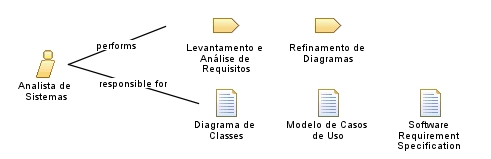

| Role: Analista de Sistemas |
 |
|
Relationships
 |
||
| Primary Performs | ||
|---|---|---|
| Additionally Performs | ||
| Modifies |
|
|
Main Description
O Analista de Sistemas é responsável principalmente pelas seguintes tarefas:
É importante lembrar que o Modelo de Casos de Uso deve ser refinado a partir do Diagrama de Classes. Por sua vez, deve ser produzido ainda na Atividade de Requisitos, um Diagrama de Classes de Domínio, que deverá ser refinado posteriormente. |
Staffing
| Skills | Um Analista de Sistemas deve preferencialmente possuir as seguintes habilidades:
|
|---|